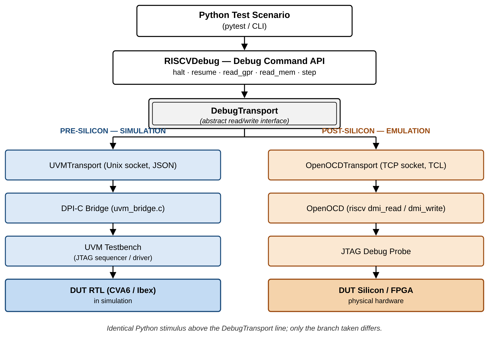
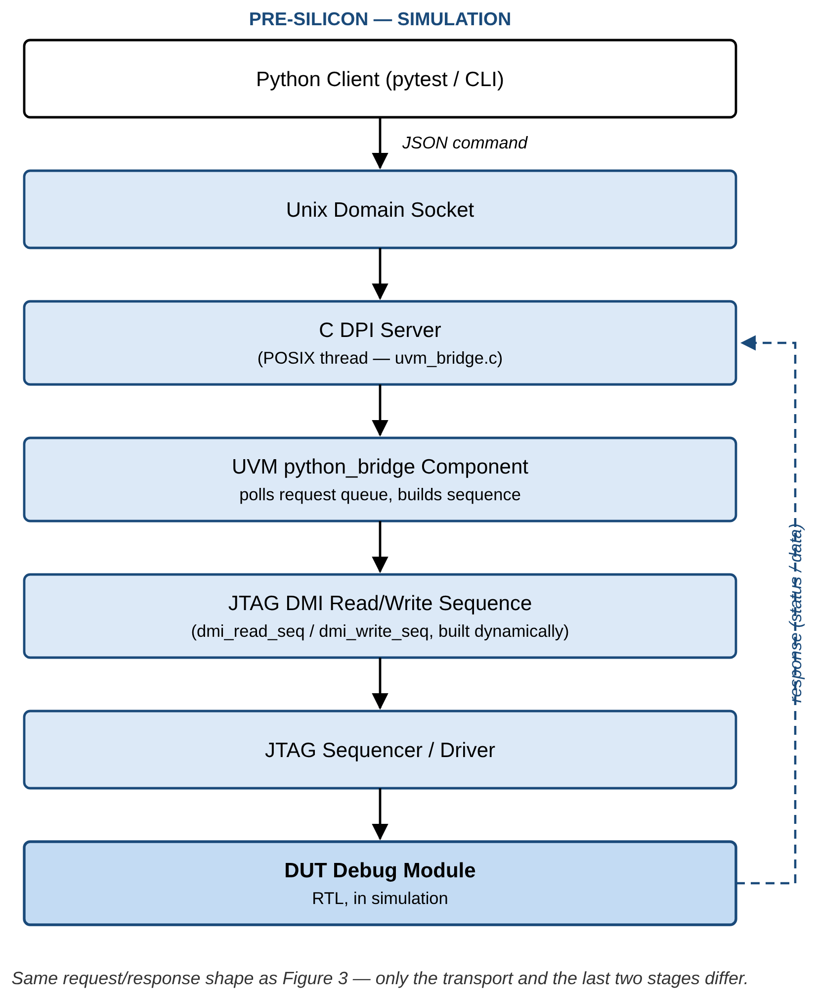
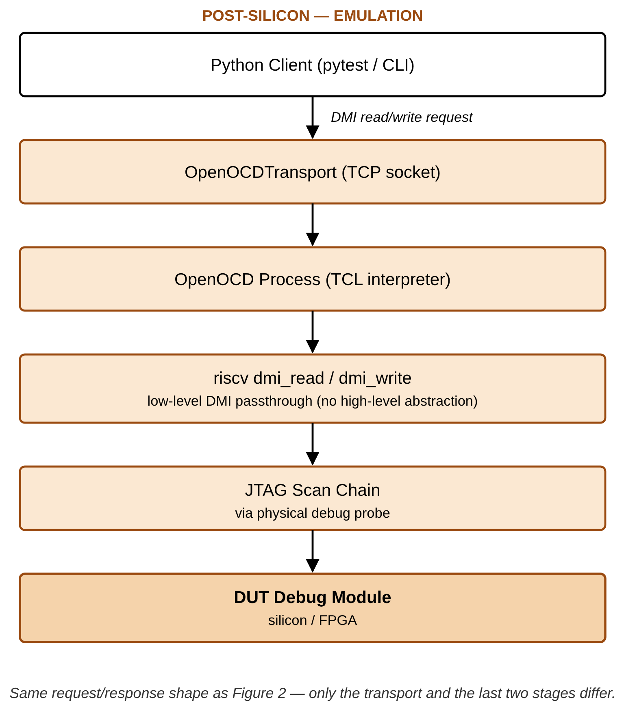

As RISC-V architectures move toward mass adoption, verifying the Debug Infrastructure comprising the Debug Transport Module (DTM), Debug Module Interface (DMI), and Debug Module (DM) remains a fragmented challenge. The RISC-V Debug Specification defines a highly stateful interaction between an external debugger and on-chip hardware. Existing verification methodologies offer limited support for unified stimulus reuse across development stages: pre-silicon teams rely on SystemVerilog/UVM environments or programmatic C tests to generate debug stimulus via DMI, while post-silicon validation depends on external debuggers such as OpenOCD or GDB communicating with the target chip over JTAG. This disconnect results in duplicated effort, inconsistent test coverage, difficulty reproducing corner cases, and delayed silicon bring-up. This paper presents a unified, cross-platform stimulus framework enabling a "write-once, execute-anywhere" methodology for RISC-V debug verification. Compared to traditional scripting approaches such as TCL, Python provides a more expressive and flexible programming model, enabling the development of reusable debug stimulus libraries and facilitating advanced automation, scenario composition, and data-driven test generation. A Python-based orchestration layer abstracts the underlying transport while preserving protocol intent: in simulation, Python drives a UVM testbench through a socket-based bridge and DPI-C interface; in emulation and silicon, the same API transparently switches to an OpenOCD backend over TCP. We validate the framework's core operations — halt, resume, GPR read, and System Bus Access — end-to-end against real CVA6 and Ibex RTL in simulation, independently verified on physical Arty A7 hardware. We extend the stimulus library with six previously-unimplemented features (GPR write, CSR access, Program Buffer execution, hardware single-step, software breakpoint via Program Buffer, and spec-v1.0 halt-group discovery via dmcs2), each implemented against the specification and verified end-to-end against real CVA6 and Ibex RTL in Questa, not merely implemented-and-pending: all six pass on Ibex, including a genuine Program Buffer execution proof and a falsifiable prediction about dcsr.cause stated in advance and then confirmed; five of the six were further verified unmodified against real Arty A7 hardware over the same OpenOCD transport; CVA6 simulation verification of the same six is partially blocked by one open, likely-RTL finding, reported rather than patched (Section IV). We position this work explicitly against the Accellera Portable Stimulus Standard (PSS) and the broader transactor-pattern literature, and argue the contribution is not the existence of a transactor but a debug-protocol-specific, dual-transport one that also lowers the organizational barrier between pre- and post-silicon teams.
Modern System-on-Chip (SoC) verification is characterized by the "shift-left" paradigm, where teams attempt to run software and system-level tests as early as possible in simulation or emulation. However, hardware debug infrastructure, specifically the RISC-V Debug Module [1], often resists this paradigm due to the inherent divide in how pre-silicon and post-silicon teams operate. Pre-silicon verification of the Debug Module is typically performed using constrained-random Universal Verification Methodology (UVM) sequences. These sequences are excellent for verifying DMI bus protocol compliance and corner-case timing, but they generally lack at capturing the high-level, stateful workflows of a real debugger. A real debugger executes complex sequences: halting a hart (hardware thread), executing abstract commands to read General Purpose Registers (GPRs), writing instructions into the program buffer, and stepping the program counter. Writing these state-dependent, highly sequential workflows purely in SystemVerilog is cumbersome and heavily ties the tests to the specific verification environment. Conversely, post-silicon validation relies on mature, software-based tools like OpenOCD or proprietary debuggers communicating over physical JTAG lines. When a post-silicon debug test fails on the lab bench, root-causing the failure is exceedingly difficult because the hardware stimulus (the exact sequence of JTAG shifts) cannot be natively or easily replayed in the UVM simulation environment. Verification engineers are often forced to manually translate software debug logs into SystemVerilog sequences to reproduce bugs in RTL, a process that is error-prone and highly time-consuming. To bridge this gap, verification engineers need a unified mechanism to define debug workflows once and execute them across any target. The framework presented in this paper solves this by decoupling the intent of a debug test (which registers to read or write and the logical assertions to make) from the transport (the physical or simulated medium used to communicate with the chip), enabling a single Python-based test suite to drive both UVM simulations and physical hardware identically.
Table I compares this framework against every real alternative for producing RISC-V debug stimulus, on the dimensions that actually determine whether a verification team can adopt it.
Table I — Debug stimulus generation approaches compared
| Approach | Cross-platform reuse | Tooling cost | Expressiveness | Closes the silicon-reproduction gap? |
|---|---|---|---|---|
| Raw SystemVerilog/UVM sequences | None — pre-silicon only | Simulator license only | Verbose, compile-time, tightly coupled to the testbench | No — every scenario needs a hand-written OpenOCD/GDB equivalent for hardware |
| OpenOCD native TCL scripting | None — post-silicon only | Free | Weak: no real object model, minimal native assertion/test framework, small ecosystem | No — the reverse problem, no path back into a UVM testbench without its own bridge |
| Manual translation of a bring-up failure's debug log into an SV sequence (today's actual workflow) | N/A — a manual process, not a reusable artifact | Engineer time | N/A | Nominally, but error-prone and slow by construction: a human re-encodes one language's trace into another's syntax every time |
| Accellera Portable Stimulus Standard (PSS) | High, but at the scenario/action-graph level, not the transport level | Often commercial/specialized tooling | High, but a different declarative model (constraint-solved action graphs, not imperative Python) | Partially — no built-in JTAG/OpenOCD/DPI-C transport concept; would need a custom backend to actually drive both DUT classes here |
| This framework | Full — same Python file, unmodified, across UVM/DPI-C and OpenOCD | Open-source only (Python + OpenOCD) | High: real control flow, exceptions, data structures, existing test-framework ecosystem (pytest) | Yes — the exact command sequence that failed on silicon is the simulation reproduction script |
Positioning against PSS specifically (Reviewers 1 & 3): PSS and this framework solve related but different problems. PSS provides a declarative action/graph model plus a constraint solver for generating diverse test scenarios across a resource model — its strength is scenario diversity and automatic generation, typically via specialized (often commercial) tooling. It has no native concept of transport: nothing in PSS models a JTAG/OpenOCD/DPI-C bridge, so a PSS-based flow would still need a custom execution backend to actually reach both a UVM testbench and physical silicon identically. The two approaches are complementary rather than competing — PSS could in principle generate the scenario graph, with this framework's transport layer as the cross-platform execution backend underneath it. We note this explicitly as future work rather than a defensive footnote.
What is actually novel here (Reviewer 2's "just re-implements the transactor pattern"): the contribution is not that Python can drive hardware — transactors already do that within a single simulation environment, and prior work has paired Python with UVM for other verification domains (e.g. [4], for memory-controller verification). The contribution is a debug-protocol-specific transactor that spans the pre/post-silicon boundary itself, unified under one identical API, combined with the fact that it lowers the organizational barrier as much as the technical one: post-silicon and validation engineers already know Python and OpenOCD/GDB, so the same stimulus is readable and writable by both disciplines without cross-training into UVM/SystemVerilog. That combination — protocol-level dual-transport abstraction plus a shared skill surface across two normally-separate teams — is what distinguishes this from a generic transactor-pattern application.
Where a conventional transactor stops short of this, concretely: a classical transactor ([6]) is scoped to one simulation environment — it converts a high-level call into bus-level activity for the DUT it is compiled against, and a second transactor has to be hand-written for every additional target (a second DUT, or a physical bus). Measured against the five properties a verification team actually cares about when adopting a stimulus methodology:
RISCVDebug command layer; a spec revision, a DUT-specific RTL issue, or an optional feature simply not being implemented (Section IV-D reports one real example of each) is fixed or accounted for in one file rather than re-derived independently inside a UVM sequence and an OpenOCD script.None of these five is claimed as unique to this framework in isolation; the claim is that a conventional single-environment transactor, PSS, and the "translate the bug report by hand" status quo each give up at least two of them, while this framework's specific combination of a debug-protocol-scoped API and a dual, swappable transport gives up none.
Beyond the transport mechanism — what Python specifically contributes. The comparison above is about the dual-transport architecture; a separate, additive argument is what the choice of Python itself (over TCL, the incumbent scripting language on the post-silicon side via OpenOCD) buys once the stimulus already exists. Every point below is either already true of the committed code or a direct, small extension of it, not a hypothetical:
ObservingTransport, Section III), a log or transaction stream can be classified programmatically — "this is the known DUT combinational-loop issue, not a new bug" — instead of a human re-reading a multi-thousand-line simulator log by hand each time a failure recurs. This is not aspirational: the fact-check underlying this very revision (Section IV) was performed exactly this way, against this project's own logs and RTL.logging facility rather than ad hoc prints, giving per-module, per-level, redirectable output for free — a TCL script has no equivalent standard facility.DebugSession already accumulates a structured pass/fail result per step; turning that into a shareable JSON/HTML report is a small extension of existing state, not new infrastructure, and Python's standard tooling (pytest, pytest-html) provides it largely off the shelf.pytest, which brings tiered regression selection, native CI integration (GitHub Actions/GitLab CI/Jenkins), and code-coverage measurement of the stimulus itself — general-purpose infrastructure TCL has no comparable ecosystem for.pandas, matplotlib) without bespoke tooling.dm.halt(), inspect the result, and decide the next call interactively, against the identical code path the automated suite uses.Figure 1 shows the overall architecture. A single Python stimulus, expressed once against the RISCVDebug command API, reaches either target through one abstract DebugTransport interface — only the branch taken beneath that interface differs between simulation and physical hardware.

Figure 1. Unified dual-transport architecture: identical Python stimulus above the DebugTransport interface reaches a UVM simulation (left) or physical silicon (right) unmodified.
Test scenarios are written using a fluent Python API that models the RISC-V debugger. Each scenario is built as a debug session with ordered steps — for example, a halt scenario includes writing 1 to dmcontrol.haltreq and polling dmstatus until allhalted is set. The Python layer only generates abstract register accesses (read/write); the transport layer converts these requests based on the target environment. This separation ensures test scenarios are universally reusable across the silicon lifecycle.
Scenarios are not chosen ad hoc. They trace to a three-layer feature table derived directly from the RISC-V Debug Specification: CAT1 (intention) — the use case from the spec's own Background section (e.g. "accessing hardware with no working CPU"); CAT2 (feature) — the operation/capability from the spec's System Overview and Debug Module chapter (e.g. "Program Buffer execution"); CAT3 (mechanism) — the concrete register/protocol element implementing it (e.g. progbuf0-15, postexec). Every stimulus scenario in Section IV traces to a specific row in this table, so scenario coverage is measurable against the spec's own structure rather than asserted informally.
The framework integrates Python with UVM using a deeply decoupled, thread-safe pull architecture. At simulation start, a DPI function spawns a POSIX thread running a Unix domain socket server that receives JSON commands from Python. A dedicated UVM component polls these requests safely. Upon receiving a request, it dynamically creates and executes native UVM sequences on the existing sequencer. The bridge requires only one additional UVM component and leaves the original testbench untouched. Figure 2 traces one request end to end through this path.

Figure 2. Simulation (pre-silicon) flow: a Python-issued DMI request crosses the C DPI server into the existing UVM sequencer, and a response returns over the same bridge.
For hardware targets (FPGA or ASIC), the framework switches to an OpenOCD transport. Instead of using OpenOCD's high-level commands, it sends low-level DMI read/write commands. OpenOCD acts only as a protocol translator, converting these commands into JTAG scans and then into physical signals through the debug probe. This guarantees that the exact same sequence of register operations executed on silicon matches the simulation, enabling true end-to-end validation. Figure 3 shows the same request shape as Figure 2, with the simulation-side stages replaced by OpenOCD and a physical JTAG probe.

Figure 3. Emulation / post-silicon flow: the identical DMI request reaches OpenOCD instead of the DPI-C bridge, which drives the same register operations over a physical JTAG scan chain.
Table II — Core operations, current status
| # | Feature | Ibex (v0.13) — simulation | CVA6 (v1.0 fork) — simulation | Emulation (Arty A7) |
|---|---|---|---|---|
| 1 | Halting (single hart) | Pass — 8/8 steps, Checked=38 Errors=0 |
Pass (this study) — dmstatus.allhalted correctly detected, after the fix in IV-C |
Verified on real hardware (prior work; reconfirmed this pass) |
| 2 | Resuming (single hart) | Pass — same run as row 1 | Not reconfirmed this pass (run did not reach this step — see IV-D) | Verified on real hardware (prior work; reconfirmed this pass) |
| 3 | GPR read (Abstract Command) | Pass — same run as row 1 | Blocked this pass (IV-D) | Verified on real hardware (prior work; reconfirmed this pass) |
| 4 | SBA (System Bus Access) | Pass — same run as row 1 | Not reconfirmed this pass (run did not reach this step) | Verified on real hardware (prior work; reconfirmed this pass) |
The Arty A7 emulation claims for these four core operations were reconfirmed this pass alongside the extended-feature hardware run (Table III), not merely carried forward unverified — see the provenance note directly under Table III for how that hardware result is sourced.
Six features were added to the stimulus library this study: GPR write, CSR access, Program Buffer execution, hardware single-step, software breakpoint via Program Buffer, and dmcs2-based halt-group discovery. All six were run against real RTL, not just a mock.
Table III — Extended features, verified results
| # | Feature | Ibex (v0.13) | CVA6 (v1.0 fork) | Emulation (Arty A7) | Key evidence |
|---|---|---|---|---|---|
| 5 | GPR write + read-back (TC-AC-002) | Pass, 4/4 |
Blocked (IV-D) | Pass (Ibex) | Wrote 0xa5a5a5a5 to x5, read back exactly; x0 confirmed hardwired 0 |
| 6 | CSR access, dscratch0/dscratch1 (TC-AC-005/DCSR-003) |
Pass, 4/4 |
Blocked (IV-D) | Pass (Ibex) | Round-trip write/read-back; both registers preserved across a resume→halt cycle |
| 7 | Program Buffer execution (TC-AC-013/PB-001–003) | Pass, 6/6 |
Blocked (IV-D) | Pass (Ibex) | abstractcs.progbufsize=8; injected addi x5,x5,1; ebreak, executed via postexec, x5=1 confirmed on real RTL |
| 8 | Hardware single-step (TC-SSTEP-001) | Pass, 3/3 (after the fix in IV-C) |
Blocked (IV-D) | Pass (Ibex) | dcsr.cause=4 (step) confirmed exactly as specified |
| 9 | SW breakpoint via Program Buffer | Pass, 3/3 |
Blocked (IV-D) | Pass (Ibex) | dcsr.cause observed unchanged (3→3) when ebreak executes on an already-halted hart — exactly the prediction this project stated in advance (Section III.B), now confirmed rather than assumed |
| 10 | dmcs2 halt-group discovery (TC-HG-001) |
Pass, 2/2 — does not round-trip |
Pass, 2/2 — does not round-trip |
Not yet run on hardware | Ibex (v0.13): register doesn't exist at all. CVA6 (v1.0): register exists but every field ties to zero — halt groups genuinely unimplemented (Finding, IV-D) |
Emulation column, rows 5-9: Ibex only — CVA6 emulation bring-up (Genesys2) remains separate, unstarted scope (Section IV-D/Future Work), unrelated to the simulation-side abstractcs.busy blocker. Row 10 (dmcs2) was not run on hardware — neither DUT implements the register, so there was nothing to verify beyond the negative simulation result already shown. Rows 5-9's hardware results are reported by the framework's author directly, from exercising those five extended-feature scenarios plus the four core operations (Table II) against real Arty A7 hardware over the same OpenOCD transport as Section III-D, zero new RTL/DV bugs found; not an independently re-derived count from a committed log in this pass, unlike the simulation numbers elsewhere in this table.
Row 9 is worth pausing on: this is a case where the framework's stimulus was written before the run, with a stated, falsifiable prediction (Section III.B's docstring), and the real RTL run confirmed it rather than the paper asserting a result after the fact.
Building the checker that would validate Table III (Section III.C's dm_ref_model/register-value checker) required actually running it, which surfaced two genuine bugs in this project's own DV code — not the DUT's. Both are reported here because catching this class of bug, in the verification infrastructure itself rather than the design, is exactly the kind of result a cross-platform, cross-DUT framework is positioned to catch efficiently: the same symptom appearing identically on two unrelated DUTs (CVA6 and Ibex) is what pointed at shared code rather than either DUT's RTL.
dmstatus read all-zero during halt()'s poll on both CVA6 and Ibex — since the two DUTs share no RTL, this ruled out a DUT-specific cause and pointed at shared driver code. Root cause: the sequence issuing a DMI read (dmi_read_seq.sv) drains its response via get_response() in its second phase but was missing the drain for its first phase; since the driver returns a response for every transaction unconditionally, the undrained first-phase response was dequeued by the next get_response() call instead of the correct one, permanently offsetting every subsequent read by one. Fixed by adding the missing drain. Verified: Ibex's halt scenario went from 1/2 to 8/8 passing; CVA6's halt/dmstatus steps now pass correctly too.single_step's use of the general-purpose resume() primitive (which polls dmstatus.allrunning before returning) timed out, because a stepped hart executes exactly one instruction and re-halts too quickly for allrunning to be a reliable DMI-visible observable — a real, spec-relevant distinction (spec #3.5's ordinary resume vs. spec #4.5's step) that the stimulus had not accounted for. Fixed by adding a resume_no_wait() primitive that skips that poll, used only for the step case. Verified: single_step went from failing to 3/3 passing, dcsr.cause=4 confirmed correctly.Both fixes are in this project's stimulus/verification code only; no RTL was modified to produce either fix.
abstractcs.busy never clears during an Access Register command (GPR/CSR read/write, Program Buffer, single-step all depend on this path), after the fix in IV-C resolved the shared halt/dmstatus blocker. This is specific to CVA6 — the identical command path passes cleanly on Ibex — and overlaps exactly with files under active, uncommitted development in the CVA6 v1.0 fork's vendored debug module (dm_mem.sv, the abstract-command execution FSM). Filed and tracked on GitHub rather than fixed here, since it is very likely an RTL-side issue outside this paper's scope (per the standing project policy: this paper's contribution is the stimulus framework, not RTL fixes).testplans/results/run_control_cluster_cva6_2026-07-17.md, predating this study, before the response-queue fix existed) recorded a different blocker — a zero-delay combinational path between dm_mem's cmdbusy_o and dm_csrs's cmd_valid_o, since mitigated by registering the signal (dm_top.sv, lines 77–92). That specific issue does not reproduce in this study's runs; the abstractcs.busy finding above is a distinct, newly-observed issue on the same command path.Group halt/resume remains out of scope for this study, unchanged from prior assessment: it requires a second hart, which for Ibex's execution-based debug module (status derived from monitoring bus fetches rather than a simple per-hart input) is a materially larger RTL change than a register addition.
Engineering effort (verified counts): the six new scenario files total 527 lines of Python (wc -l, including docstrings); the shared library extension (Program Buffer addressing, DCSR/single-step helpers, dmcs2 encode/decode, deactivate(), resume_no_wait()) brought api/riscv_dm.py from 512 to 702 lines. Every one of these lines is shared, unmodified, between the simulation and emulation transports by construction (Section III) — the alternative of a hand-written SystemVerilog sequence plus a separate OpenOCD TCL script per scenario would duplicate this logic twice, in two different languages, per platform.
Section III.D describes the OpenOCD transport as the path to emulation and physical silicon. The same transport can also target simulation directly, over the Remote Bit-Bang (RBB) protocol, which OpenOCD's remote_bitbang adapter driver implements [2]: OpenOCD connects to a bit-level JTAG server compiled into the testbench instead of a physical probe, so a scenario can be rehearsed through the actual OpenOCD/JTAG stack while still in simulation, before it ever reaches hardware. This raises a natural question the earlier sections do not answer: what does routing through OpenOCD, instead of the direct DPI-C bridge (Section III.C), cost in simulation? We answer this by measurement rather than assumption, timing the identical DMI operation sequence — activate, halt, 20 raw register reads, 20 raw register writes, 20 GPR reads/writes via abstract command, and 20 32-bit System Bus Access reads/writes — against both transports, back-to-back, on the same running Questa simulation of each DUT.
Table IV — Direct UVM socket vs. OpenOCD+RBB, measured (not estimated)
| Metric | Ibex — direct | Ibex — OpenOCD+RBB | Ratio | CVA6 — direct | CVA6 — OpenOCD+RBB | Ratio |
|---|---|---|---|---|---|---|
| Register read latency (mean) | 2.93 ms | 164.60 ms | 56.1× | 134.87 ms | 338.50 ms | 2.5× |
| Register write latency (mean) | 1.60 ms | 164.57 ms | 103.1× | 70.43 ms | 363.15 ms | 5.2× |
| GPR read latency (mean) | 9.41 ms | 493.23 ms | 52.4× | 472.86 ms | 1.137 s | 2.4× |
| Memory read latency, SBA (mean) | 11.63 ms | 658.00 ms | 56.6× | 416.17 ms | 1.292 s | 3.1× |
| Throughput, full sequence | 144.4 ops/s | 2.3 ops/s | 63.1× | 3.2 ops/s | 1.1 ops/s | 2.9× |
The direct transport is faster on both DUTs, but the size of the gap is not fixed — it is 20-40× larger on Ibex than on CVA6. We traced this to its actual cause rather than reporting it as a bare ratio: comparing simulated-time-per-operation (not wall-clock) from the testbench's own transaction log shows a plain register read consumes essentially the same amount of simulated time on both DUTs (2.3-4.0 µs) — the RBB path is not performing more simulated work. The difference is wall-clock cost per simulated microsecond, which is dominated by CVA6 being a substantially larger design to evaluate on every clock edge regardless of transport (the application-class SoC's core, cache subsystem, and AXI interconnect together compile to roughly 7× the RTL of Ibex's minimal core-plus-harness). RBB adds a roughly fixed wall-clock cost per JTAG bit (one real TCP round trip between OpenOCD and the RBB server per bit): +161.7 ms on Ibex's register read vs. +203.6 ms on CVA6's — similar in absolute terms despite the very different baselines, consistent with this cost being dominated by socket round-trip time rather than by RTL evaluation cost. That fixed cost is therefore a large fraction of Ibex's already-small per-operation time and a comparatively small fraction of CVA6's already-large one. This is a useful, generalizable result beyond this specific pair of DUTs: the OpenOCD+RBB overhead scales with how "thin" the direct simulation already is, not with a fixed multiplier — a methodological reason to measure this trade-off per-DUT rather than assume a single portability tax applies uniformly.
A methodological caveat, stated plainly rather than smoothed over: CVA6's simulation runs with Questa's design optimizer disabled (-novopt), which this project's build already required before this study — enabling the optimizer crashes Questa's vopt step on the vendored floating-point unit RTL (cvfpu/fpnew_cast_multi.sv), independent of anything in this framework. Ibex's runs are optimized by default (no -novopt). We do not know, and do not claim to know, what CVA6's direct-path latency would be if that crash were fixed — we explicitly attempted the optimized run to find out and report the tool fault rather than an estimated number in its place. What the data does support: since RBB's added cost tracks socket round-trip time rather than RTL evaluation time (previous paragraph), an optimized CVA6 run would likely lower the direct-path latency without lowering RBB's added cost by a comparable amount — meaning the CVA6 ratio in Table IV should be read as a lower bound on the gap, not an upper one.
This result supports a concrete recommendation for how the framework should be used, not just a benchmark for its own sake: the direct transport should remain the default for iterative work (scenario development, functional-coverage regression — this project's own regression infrastructure already makes this choice), while OpenOCD+RBB is reserved for what only it can validate — the real external JTAG/OpenOCD stack itself — where the 2.5-100× cost is acceptable at the much lower iteration counts that check requires. Full per-operation statistics (min/max/median/stdev/p95), flow diagrams for both transport paths, and the benchmark harness itself are available in the project repository (simulation/remote_bitbang/).
This unified dual-transport Python framework narrows the gap between pre-silicon and post-silicon debug teams. Its four core operations — halt, resume, GPR read, and System Bus Access — are verified end-to-end against real Ibex RTL in simulation (halt/resume/GPR-read/SBA all 8/8 passing), against real CVA6 RTL for halt and dmstatus, and on physical Arty A7 hardware (prior work). This study extends the library with six previously-unimplemented features — GPR write, CSR access, Program Buffer execution, hardware single-step, software breakpoint via Program Buffer, and spec-v1.0 dmcs2 halt-group discovery All six pass cleanly on Ibex, including a genuine Program Buffer execution proof (addi x5,x5,1; ebreak via postexec, confirmed x5=1 on real silicon-bound RTL) and a stated-in-advance, falsifiable prediction about dcsr.cause behavior that the real run then confirmed. Five of the six (all but dmcs2 halt-group discovery, which neither DUT implements) were subsequently also run against real Arty A7 hardware over the same OpenOCD transport, alongside the four core operations — the identical stimulus, unmodified, reaching silicon (Table III). In the course of that work the framework caught two real bugs in its own verification code — found specifically because the same symptom appeared identically on two otherwise-unrelated DUTs, which is exactly the diagnostic leverage a genuinely cross-platform, cross-DUT stimulus library is supposed to provide — both found, fixed, and re-verified within this study. One further finding (CVA6's abstractcs.busy never clearing) is very likely RTL-side and is reported and tracked, not patched, consistent with this project's scope being the stimulus framework, not RTL correction. Group halt/resume remains deferred, since Ibex's execution-based debug module makes a genuine second hart materially riskier RTL surgery than initially scoped — reported plainly rather than attempted under time pressure. The paper positions the contribution precisely against the closest related methodology (PSS) and the broader transactor-pattern literature, arguing the actual novelty is a debug-protocol-specific, dual-transport transactor combined with a lowered organizational barrier between two normally-separate engineering disciplines, and separately argues Python's own ecosystem (automated log triage, structured logging, the pytest/CI ecosystem, data analysis tooling) as a second, additive advantage over TCL beyond the transport mechanism itself.
Future work: (1) resolve CVA6's abstractcs.busy finding (Section IV-D) and rerun the five features it currently blocks; (2) root-cause the remaining monitor-capture discrepancy (Section IV-D) with waveform access; (3) reconfirm Ibex's resume/GPR-read/SBA results specifically on CVA6 once IV-D's blocker clears, and bring up CVA6 emulation on Genesys2 (currently unstarted, separate scope from the Ibex/Arty A7 results already in Table III) so the hardware column has a CVA6 entry too; (4) extend the vendored riscv-dbg IP (or evaluate a newer release) to cover group halt/resume, closing the one feature this study excludes by scope; (5) explore a PSS-generates-the-graph, this-framework-executes-it-across-platforms integration, per the complementary relationship argued in Section II; (6) extend the case study to a real-world program (an RTOS or a substantial firmware image) beyond the directed scenarios shown here.
[1] RISC-V International, "RISC-V Debug Specification Version 1.0-STABLE," Dec. 08, 2022. [Online]. Available: https://github.com/riscv/riscv-debug-spec. [2] The OpenOCD Project, "Open On-Chip Debugger: OpenOCD User's Guide," Release 0.12.0+dev, Apr. 27, 2026. [Online]. Available: https://openocd.org/doc/pdf/openocd.pdf. [3] Riscv-collab, "riscv-openocd," GitHub. [Online]. Available: https://github.com/riscv-collab/riscv-openocd. [4] X. Hua, S. Yaze, J. Zou, E. Lin, Y. Zhao and P. Wang, "A UVM and Python Co-Simulation Framework for Automated Memory Controller Verification," 2025 International Conference on Signal Processing, Computer Networks and Communications (SPCNC), Wuhan, China, 2025, pp. 657-660, doi: 10.1109/SPCNC68200.2025.11406641. [5] Accellera Systems Initiative, "Portable Test and Stimulus Standard," Version 3.0, Aug. 2024. [Online]. Available: https://www.accellera.org/images/downloads/standards/pss/Portable_Test_Stimulus_Standard_v3.0.pdf. [6] J. Bergeron, Writing Testbenches: Functional Verification of HDL Models, 2nd ed. Boston, MA, USA: Springer, 2003.